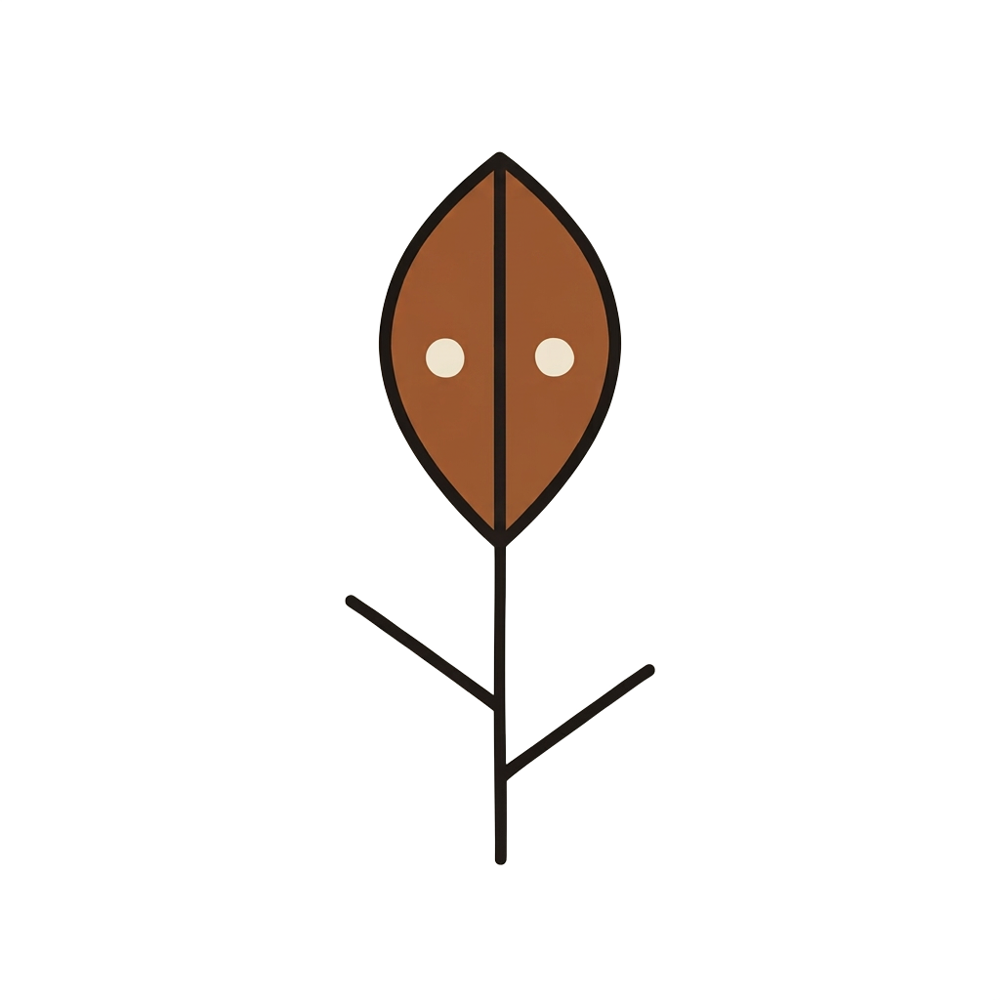

<!doctype html>
<html lang="en">
<head>
  <meta charset="utf-8">
  <meta name="viewport" content="width=device-width, initial-scale=1">
  <title>The Flower Clock</title>
  <link rel="icon" href="data:,">
  <link rel="stylesheet" href="style.css?v=round-reset-1">
  <script src="../../vendor/p5.min.js" defer></script>
  <script src="sketch.js?v=round-reset-1" defer></script>
</head>
<body>
  <audio id="place-sound" src="../../sounds/object-place.mp3" preload="auto"></audio>
  <audio id="plant-sound" src="../../sounds/plant.mp3" preload="auto"></audio>
  <main>
    <div id="clock-canvas" aria-label="Flower clock"></div>
    <aside aria-label="Target pattern">
      <div id="pattern">
        
        
        
      </div>
      <button id="reset" aria-label="Reset current sequence" title="Reset current sequence" hidden>
        <svg viewBox="0 0 24 24" width="24" height="24" fill="none" stroke="currentColor" stroke-width="1.8" stroke-linecap="round" stroke-linejoin="round" aria-hidden="true">
          <path d="M21 11a9 9 0 1 0-2.8 6.5"/>
          <path d="M21 4v7h-7"/>
        </svg>
      </button>
    </aside>
  </main>
  <script src="../../module.js?v=navigation-sound-2"></script>
</body>
</html>
